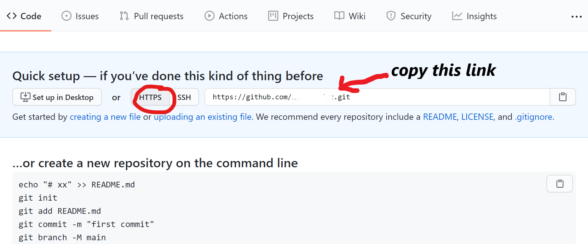
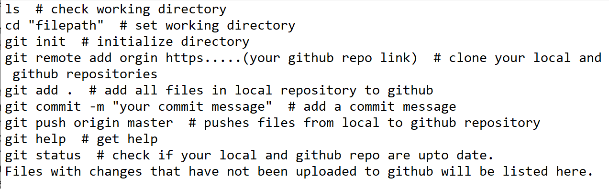

Chapter 4 GitHub & GitHub Pages
4.1 Sharing on GitHub
4.1.1 Via direct file upload
Github is great for project collaboration, backup and version control. To use github as your repository manager;
- Create an account at (https://github.com/).
- Create a repository for your files. Click on the plus sign + located at the top right corner of your github account page.

- Click on ‘New Repository’ from the drop-down menu.
- On the new window that appears, give the repository a name: NAPBook_Tutorial
- Leave the repository as ‘Public’
- Leave everything else as is
- Scroll down and click on ‘Create Repository’
- On the resulting window, click on ‘upload an existing file’

This will take you to a new window, from which you can drag-&-drop or browse to your files.
- Click on ‘choose your files.’
- Navigate with the file explorer to where we saved our ‘NAPBook_tutorial’ folder in your pc.
- Select everything within this folder, and click ‘Open.’
Your files will start loading. Give it a minute or so.
If you scroll through the files you will notice that our ‘docs’ folder is missing. Do not worry!
- To add the folder, lets use the drag and drop method. From your file explorer, navigate to our NAPBook_tutorial folder, and click once on the ‘docs’ folder to select it.
- Drag and drop this folder into your github repository. The files should start uploading.
14.. After your files finish uploading, scroll down to the ‘Commit changes’ field; here you may enter a short description for your files. Let’s enter the text ‘our first NAP book commit’
When making changes to your files, you may use this field to briefly describe what changes you made, otherwise commonly known as commits.
- Next, hit the ‘Commit changes’ button at the end. This is called commiting.
4.1.2 Via Git Bash
- Download and install Git Bash from this link (https://git-scm.com/downloads).
- Repeat steps 1 - 7 in the preceding section.
- On the new window, click on the ‘https’ tab to reveal the url for your repository. 
- Luanch Git Bash on your pc. This opens up a window with your pc name in the text. This is the command window.
- Set the working repository to where your project files are located. To do this, type in commamd
cd "path to your project files directory. Click Enter on your keyboard.
- Type in
git initto initialize this directory as your file origin.
- Type in
git remote add originthe paste the https link from step 4. Click Enter.
- Type in
git add .to add all project files in your pc to your github repository.
- To add only specific file, type in
git add .insert name of file
- Type in
git commit -m, open quotation marks and insert a commit message. Click Enter.
- Type in
git push origin masterand click Enter. This pushes/uploads your files plus the commit message to your github repo. Below is a list of the above commands

Congratulation once again!
To share your repository with colleagues and friends, just copy the link on your browser and share it with them. The link should take a similar identity as below;
4.2 Publishing to GitHub pages
Github pages helps you to create/publish websites in very simple steps. We will publish the NAP book we just created with bookdown into a git-based website. To do this,
- From the github repository you created in last step, click on the Settings tab (right side of your screen)
- Scroll down the listed menu items on the left side of the screen until you find menu item ‘Pages.’ Click on it.

- Scroll down to the ‘Source’ field. Click on the drop-down arrow and select the main branch and docs folder as your source files for your website. Click Save.
- Next, on the ‘Theme Chooser’ field, click to choose a theme for your website.
A page similar to this appears.
You may scroll through to see the options. For this case, lets select the first theme ‘Cayman.’
- Once a theme is selected, a message with a link to your website appears just above your ‘Source’ field.
Your site is ready to be published at https://yourusername.github.io/repositoryname/
or as seen here
Use this link to view your newly created website.
Alternatively, navigate back to your main repository area, scroll down to your right to find your active ‘github-pages.’ Click to view your website deployments.

gh pages deployment
Now give yourself a pat on the back!